Import and Validation Errors
Importing data into OneStream is a routine part of any admin’s responsibilities. While this process is generally simple, the errors you can get when a data load fails can be somewhat cryptic. The purpose of this chapter is to cover the most common import and validation errors, explaining what might be causing them and hopefully giving you a better chance at resolving them.
Import and Validation Errors
Import Workflow Background
Import and Validation Errors › Import Workflow Background
Executing Data Imports
Before listing errors, let’s quickly cover the basics of Import workflows in OneStream. All inputted data in OneStream (including import data, form inputs, and journal entries) are handled by the workflow engine. In this chapter, we only deal with base Import workflows, which will generally have three steps: Import, Validate, and Load.
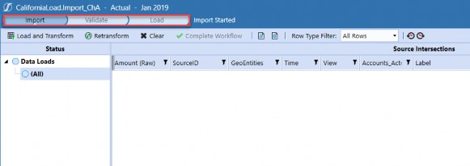
Figure 8.1
Each of these steps will give you access to various events. It’s not obvious what is happening in the background, so let’s cover what happens behind the scenes when each of these events is triggered. It’s important to understand them, as you can generally infer where to look first, based on where you are getting your errors.
Load and Transform: OneStream will import data into the source Stage table, using the data source configured on the current workflow step. Once complete, you can view the source cells that were successfully imported to Stage. Typically, issues with your data source will manifest here.
Although the transformed cells aren’t displayed here, OneStream will also transform the source cells into your cube dimensionality using the transformation rules configured on the same workflow step. The transformed data is stored on the target Stage table. Something to note is that because OneStream performs the transformation here, issues with your transformation rules can actually cause the entire import to fail.
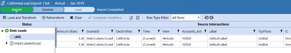
Figure 8.2
Validate: OneStream will confirm that all source cells have a transformation rule, and also confirm that all transformed intersections are valid for the current cube. If there are issues with your transformation rules, or with the entity or workflow channel assignment of your current workflow, they will appear here.
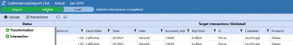
Figure 8.3
Retransform (on the Validate step): OneStream will clear the previously generated target intersections and rerun the source cells through the transformation rules (same as it would in the Load and Transform steps) and then repeat the same validation steps from the Validate button.
In general, it’s safer to run Retransform over Validate, even if it might take slightly longer to process. If you only run Validate, and your transformation rules were recently changed, the target intersections will not reflect the changes.
Load Cube: OneStream will load the transformed data to the cube. Typically, if you’ve
made it this far, you’re home free.
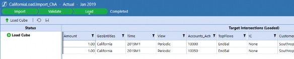
Figure 8.4
Import and Validation Errors › Import Workflow Background
Configuring Imports
If there are issues with an import, you should first check the Workflow Profile properties of the offending workflow. Here, you can see what the attached Data Source and Transformation Profile are, making sure to check the properties for the correct Scenario Type. If you don’t look at the correct Scenario Type, you might not realize that your import is using the default data source and transformation profile and causing invalid intersection errors.
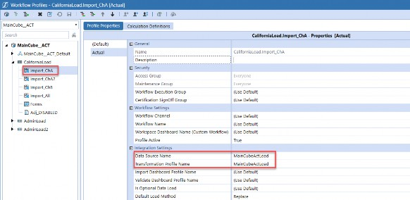
Figure 8.5
The vast majority of errors when importing data will stem from an issue with the workflow settings, the data source settings, or the transformation rule settings. In the following sections, we’ll cover configuration mistakes that lead to common errors. For more details on workflow configuration in general, refer to Chapter 6: Work the Workflow.
Import and Validation Errors
Troubleshooting Tools
Import and Validation Errors › Troubleshooting Tools
Task Activity Log
As always, the Task Activity log is a great tool for reviewing your error message and investigating what process is failing. You can access it by clicking the Task Activity Button on the top menu bar.
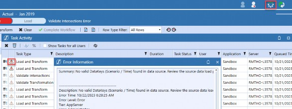
Figure 8.6
Import and Validation Errors › Troubleshooting Tools
Processing Log
For detailed, row-by-row information on the processed source cells, you can access the processing log by clicking the View Last Log File Processed For Current Workflow Profile button. This functionality is typically included by default for most customers, but if you cannot access it, you will need to reach out to your cloud support team to configure the log server.
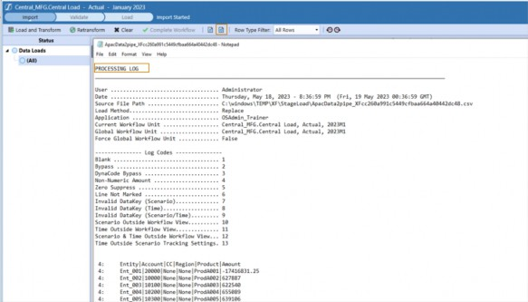
Figure 8.7
Import and Validation Errors
Import Errors
This section covers the common errors you can encounter on the import step.
Import and Validation Errors › Import Errors
No Assigned Data Source or Transformation Rule
These errors are self-explanatory: the current Workflow Profile doesn’t have an assigned data source transformation rule.
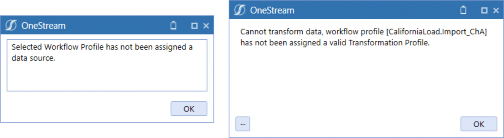
Figure 8.8
Usually, this error occurs when data sources are assigned to specific Scenario Types, but nothing is assigned to the Default Scenario Type. For example, suppose we create a new scenario with type Actual, and no data source is assigned to the Actual Scenario Type on the workflow. If there’s nothing assigned to the Default Scenario Type, then OneStream throws these errors.
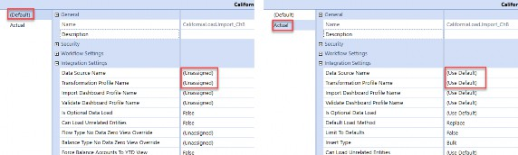
Figure 8.9
Note: It’s actually recommended to leave the Data Source and Transformation Profile unassigned for the Default Scenario Type. This gives you more flexibility in the future and prevents accidentally using the Default Scenario Type’s settings when a new scenario is created. It’s generally better to have OneStream throw an error rather than generate potentially faulty data. |
Import and Validation Errors › Import Errors
Data Source is Missing Required Fields
This error is also fairly self-explanatory (and descriptive).
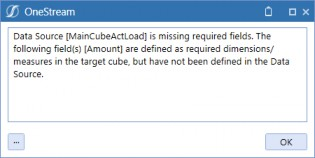
Figure 8.10
A common reason for this error to pop up is trying to reuse a data source for a new Scenario Type, where the dimensionality on the cube does not match. For example, Actual Type scenarios might have more or fewer dimensions assigned on the cube than Plan Type scenarios.
Regardless, resolving the error is simple. If you’ve attached the wrong data source, then you only need to assign the correct data source for your Scenario Type. If the data source is truly just incomplete, then go to the data source attached to the workflow and assign the missing dimensions in the Data Source tab.
Import and Validation Errors › Import Errors
No Valid DataKeys (Scenario/Time) Found in Data Source
The classic import error – getting this error is truly a rite of passage for every admin! We can safely say that there are few errors that generate as much hair-pulling as this single error. Luckily for you, we’ve suffered through the troubleshooting, so you don’t have to!
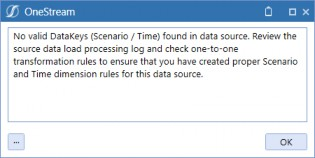
Figure 8.11
To fully understand this error, we have to explain what OneStream means by valid DataKeys. In Chapter 6: Work the Workflow, we covered how the workflow engine is responsible for managing all incoming data entering the system. All incoming records are tagged with a workflow cluster primary key, which is comprised of three bits of information: the selected Workflow Profile, Scenario, and Time from your current Workflow POV.
The “key” here is that scenario and time are especially important dimensions because they are part of the workflow cluster key, and are therefore referred to as “DataKeys”. The workflow engine will reject any incoming source data that is missing scenario and time information, with the error text notifying you that your transformed target intersections do not have a specified Scenario and Time member.
With that in mind, there are several possible reasons for scenario and time information to be missing, which we will cover now.
Import and Validation Errors › Import Errors › No Valid DataKeys (Scenario/Time) Found in Data Source
Case 1: No Source Records Found
If you are using a file data source, then an empty file would cause this error. The reason for this is that OneStream reads in zero rows, and then subsequently reports that there are zero rows tagged with the current workflow scenario and time. The error message, in this case, is not technically wrong but is a bit misleading. Additionally, configuring the data source incorrectly such that OneStream skips all source records would lead to the same behavior.
Similarly, if you are using a connector business rule in your data source, then having no data in your source system will cause the same error. Alternatively, if your connector runs successfully but returns no rows, then you will also get this error. In this case, the first thing you should check is the filter conditions in your query to confirm you aren’t inadvertently filtering out all of your source records.
To see if this is the reason for your error, you can check the task log or processing log and see how many data rows were found in your source. If you see 0 rows, then that usually indicates that you’ll need to check your source data system or your connector business rule.
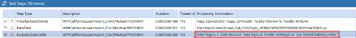
Figure 8.12
Import and Validation Errors › Import Errors › No Valid DataKeys (Scenario/Time) Found in Data Source
Case 2: Improper Data Source Scenario/Time Setup
If you are sure that your data source is returning records, the next step would be to check the configuration on the data source itself – specifically the Scenario and Time dimensions.
The most common setup is to set the Scenario Dimension Data Type as Current DataKey Scenario and the Time Dimension Data Type as Current DataKey Time. This ensures that – on import – all records get tagged with the current Workflow’s POV. However, when the data source is instead configured to pull other values for scenario and time, there is now a potential for the scenario and time on the source cells not to match the Workflow POV.
For example, suppose we are running an import for the Actual scenario on 2021M1. Here, because the Scenario’s value for the data source is hardcoded to NotARealScenario, all source cells will be tagged with that value on import. However, since this does not match the expected value of “Actual” you will get an invalid DataKey error. The solution in this case would be to change the
Static Value field to Actual.
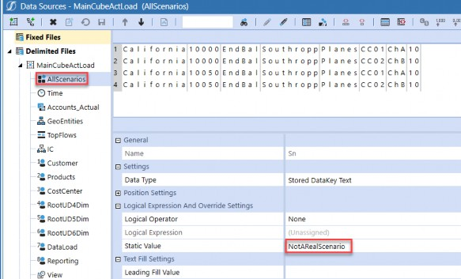
Figure 8.13
| Note: Data sources are typically configured to use Current DataKey Scenario and Current DataKey Time for Actual scenarios where the workflow tracking frequency and input frequency are the same. For Plan scenarios where this might not be the case, you might have to use a different approach to guarantee the records to be imported match the Workflow POV. |
Import and Validation Errors › Import Errors › No Valid DataKeys (Scenario/Time) Found in Data Source
Case 3: Missing Scenario or Time Transformation Rules
Recall that on the import step, clicking Load and Transform will both 1. import the source data into the source Stage table, and 2. transform the source data into the cube dimensionality using the assigned transformation rules.
Let’s quickly discuss how OneStream determines the target scenario and time for transformed target cells. If the Scenario and Time dimensions on the data source are set to the Current DataKey Scenario/Time, OneStream knows to write the target cells to the current Workflow POV, and – in fact – doesn’t look at the Scenario and Time transformation rules.
However, if you configure the Scenario and Time dimensions to take on custom values, OneStream will now attempt to run the scenario and time values through the assigned transformation rules.
For example, suppose we are loading data to the Actual scenario and have configured our data source to assign Actual as the scenario value for all source cells.
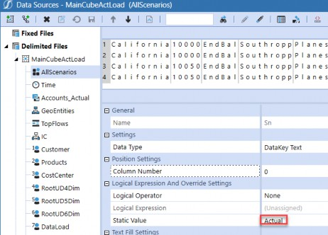
Figure 8.14
Because we have hardcoded the scenario value, OneStream will attempt to map Actual to a target value via the assigned transformation rules. It seems redundant, but for this import to succeed, there must be a pass-through mapping from Actual to Actual, as shown below. Without it, the target cells end up with null scenario values, leading to the infamous invalid DataKey error. Of course, the same logic would apply to the Time dimension.
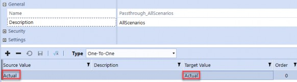
Figure 8.15
Setting the scenario and time values to the current DataKey values avoids this potential issue, which is why it is the recommended approach. If, instead, you’ve decided to live dangerously, it’s common to have “pass through” transformation rules that simply map every Scenario and Time member one-to-one to itself, as shown below. Of course, this is extremely manual and error-prone: missing a few entries is usually the source of invalid DataKey errors.
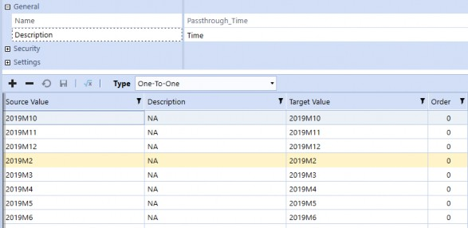
Figure 8.16
Import and Validation Errors › Import Errors › No Valid DataKeys (Scenario/Time) Found in Data Source
Case 4: Source File Missing Columns
Every target intersection must have a scenario, time, and amount value. If any of these values are missing, OneStream rejects the record. Going further, if the data source is configured incorrectly, such that all records have null values, then you end up with a similar situation to Case 1: No Source Records Found, where there are no records at all and OneStream informs you that none of your records have valid DataKeys.
For example, consider the following data source, which would result in the invalid DataKey error. The Amount field is configured to pull the value from column 20 of the source file. However, the source file only has 8 columns, which means – on import – all amount values would be null. This sort of situation can occur when source files change formats between loads, breaking Import workflows that worked in the past.
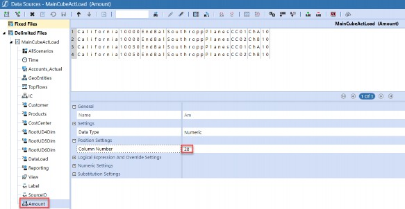
Figure 8.17
Import and Validation Errors
Validation Errors
This section covers the common errors you can encounter on the Validate step.
Import and Validation Errors › Validation Errors
Transformation Errors
When you hit the Validate button, OneStream will attempt to map each field for each source record into a target dimension member using the transformation rules selected on the Workflow Profile. If there are fields with missing mappings, OneStream will list the offending records like so.
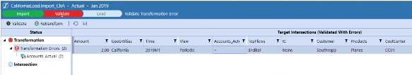
Figure 8.18
Fortunately, OneStream provides more detail on exactly which source values don’t have mappings. For example, in Figure 8.19, the values 10000 and 10050 have no mappings in the Passthrough_Accounts transformation rule group.
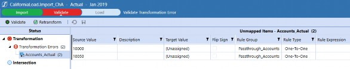
Figure 8.19
The solution here would be to map these values into their corresponding accounts, using any of the available transformation rule types (e.g., One-To-One).
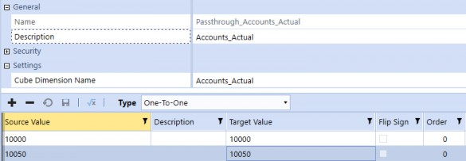
Figure 8.20
It’s also common to implement “pass through” rules as a safeguard to capture unmapped records, to avoid missed one-to-one mappings from stalling imports entirely. To do this, you can create a “star-to-star” mask rule, which simply takes the source value and assigns it as the target value.
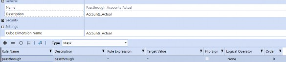
Figure 8.21
Another option would be to create a general bypass mask rule, which takes any unmapped values and tells the system to simply ignore them. From a technical perspective, OneStream will not load any target intersection with (Bypass) to the cube. However, this is risky; by bypassing missing mappings, failing to review the bypassed target intersections might mean your cube ends up with missing data without you realizing. If you want to avoid this possibility, you could choose not to implement a bypass rule and instead reconcile any unmapped source records.
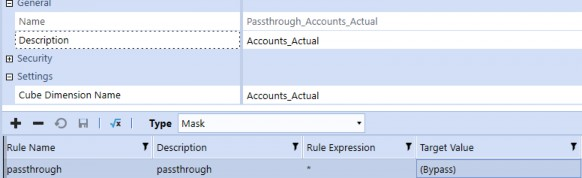
Figure 8.22
| Note: It’s a minor detail, but mask rules run marginally slower compared to one-to-one rules. If you are seeing extremely slow transformation speeds, one option would be to convert all your rules into one-to-one mappings. The tradeoff, of course, is that the mappings now become a maintenance headache, so this isn’t generally recommended as the increase in speed doesn’t typically justify the increased chance of maintenance errors. |
Import and Validation Errors › Validation Errors
Invalid Intersection Errors
Once all source records are successfully transformed to the target values, OneStream performs various validation checks to confirm that the target intersections are valid for your target cube. Here are the most common errors during this step.
Import and Validation Errors › Validation Errors › Invalid Intersection Errors
Invalid Member Name
When creating transformation rules, OneStream has safeguards to prevent you from assigning invalid member names in the target value field. However, if you have “star-to-star” mask rules in place, it’s now possible for source values to get mapped to invalid targets. This will have to be addressed either at the data source level or through additional mappings to your transformation rules.
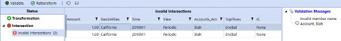
Figure 8.23
Import and Validation Errors › Validation Errors › Invalid Intersection Errors
Loading to Parent Member
Recall that OneStream only allows you to load data to base members with respect to the current cube dimensions. If you attempt to load data to parent members, you’ll get the following Invalid Intersections error.
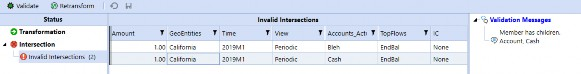
Figure 8.24
Import and Validation Errors › Validation Errors › Invalid Intersection Errors
Constraint Violation
This error means that you’ve violated the constraints applied to your entity, account, or UD1. We discuss applying constraints in Chapter 9: Constraining and Locking Data. But for now, recall that constraints allow you to specify which intersection combinations are valid. In this case, account 10000 is restricted to only load to the “GolfStream” customer member.
In this situation, there’s really no catch-all solution, since you’ll have to evaluate if the constraint is legitimate for your business use case.
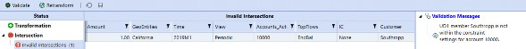
Figure 8.25
Import and Validation Errors › Validation Errors › Invalid Intersection Errors
Entity Not Assigned to Workflow
OneStream throws this error if you are attempting to load a separate entity’s records to the current workflow.
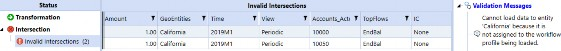
Figure 8.26 Depending on your situation, there are two possible solutions:
If this workflow should truly own this entity, and the assignment was just missed, then the entity can be assigned on the Workflow Profile pane on the Entity Assignment tab.
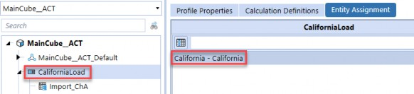
Figure 8.27
If the entity is assigned to another workflow, but the current workflow is a central input workflow that needs access to all entities, then you can set the Can Load Unrelated Entities field to True.
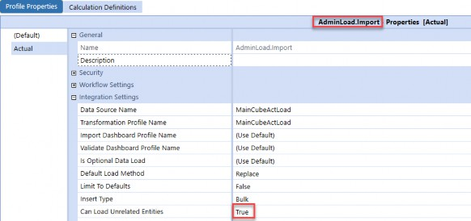
Figure 8.28
Import and Validation Errors › Validation Errors › Invalid Intersection Errors
UD Member Not Assigned to WF Channel
If you have assigned a workflow channel to your base input workflow, OneStream will not allow you to load to target members that have a different workflow channel assigned to them.
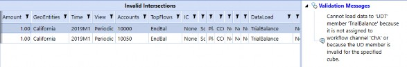
Figure 8.29
Here, for example, we’ve configured our application to apply workflow channels to the U7 dimension, and we’ve assigned Workflow Channel ChA to our workflow. However, since we have not yet assigned any workflow channels to the U7 TrialBalance member, OneStream throws the error above.
To fix this, we can navigate to the dimension library and set the Workflow Channel value of our
TrialBalance member to ChA.
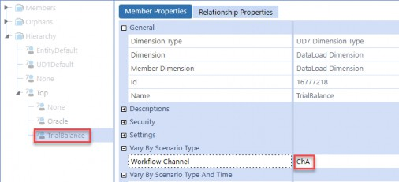
Figure 8.30
Import and Validation Errors › Validation Errors › Invalid Intersection Errors
Account Not Assigned to WF Channel
Recall that even if you’ve configured your application to apply workflow channels to a different dimension, OneStream will still always apply workflow channels against the Account dimension as well. Unfortunately, this almost always leads to conflicts, as the old workflow channel assignments on your accounts will create errors on validation.
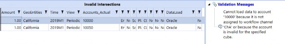
Figure 8.31
Let’s consider the following configuration to see why this error occurs. Suppose our application was recently updated to apply workflow channels to the UD7 DataLoad dimension, and the current input workflow was also changed from ChB to ChA to allow us to write data to these DataLoad members.
This update will mean on the next data load, you will see the validation error from above. This is because our accounts were all initially assigned to Workflow Channel ChB, as shown below, to match the old workflow channel setting.
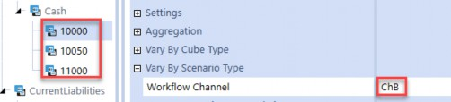
Figure 8.32
In this case, all accounts must have their workflow channel field updated to NoDataLock. By doing so, OneStream allows any workflow to load to these members, which bypasses the account WF channel errors.
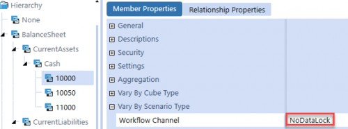
Figure 8.33
To understand more about how OneStream handles workflow channels during data loads, refer to Chapter 6: Work the Workflow.
Import and Validation Errors › Validation Errors › Invalid Intersection Errors
Conditional Input Rule Locking
This error appears if you attempt to write to read-only cells that are locked due to conditional input business rules (i.e., NoInput rules).
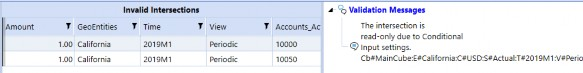
Figure 8.34
To troubleshoot this error, check what business rules are attached to the cube, since all NoInput rules must be assigned to the cube and cannot trigger elsewhere. Once you’ve located the business rule, the first step would be to check the control flow conditions to make sure the rule is not triggering unexpectedly. For example, you might want to check that the rule is only triggering for specific entities, and not for all entities, depending on your requirements.
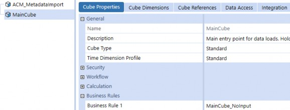
Figure 8.35
For more details on NoInput rules, see Chapter 9: Constraining and Locking Data.
You can also get similar errors because of the settings applied on the Data Access tab on your cube. For more details on this type of security, refer to Chapter 12: Securing the Pieces.
Import and Validation Errors
Conclusion
In this chapter, we covered a number of common import and validation errors, explaining the various reasons why they might appear, and providing a framework for how to resolve them. It’s also important to understand the background information on workflows and imports in order to develop a better intuition towards finding the root cause of data load issues; without it, there are simply too many possible errors to list. In closing, we know that data load errors are often panic inducing, so we hope that this chapter gives you some peace of mind for the times when that red flashing box inevitably pops onto your screen!